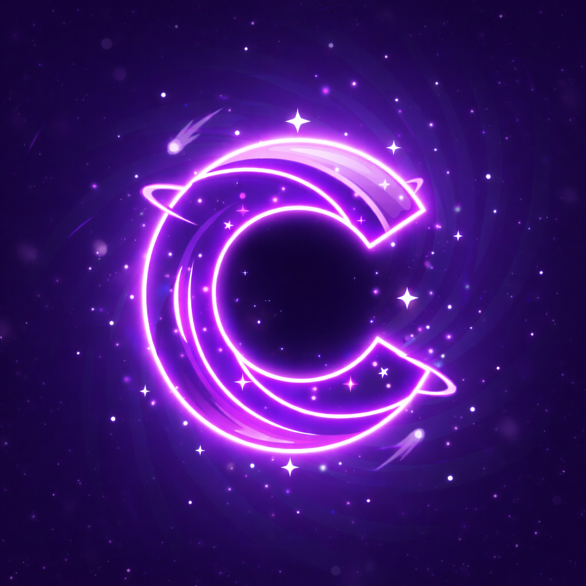

Clustrix / App Hub
Your Central Gateway to The Purple Pulsars Ecosystem
The Discovery Platform
Clustrix is the beating heart of our software suite. It acts as a curated launcher and discovery hub where you can manage, update, and explore all applications built by The Purple Pulsars.
- Centralized App Management
- Instant Access to Sirius, Binary Browser & More
- Real-Time Update Notifications
- Exclusive Previews of Upcoming Tools
Get The Hub
Start your journey into our ecosystem. Download the central hub today.
Download Clustrix